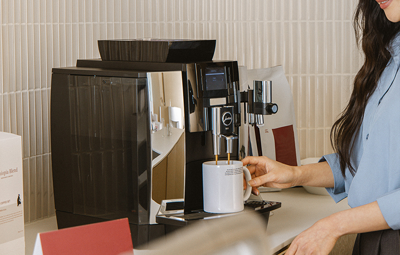
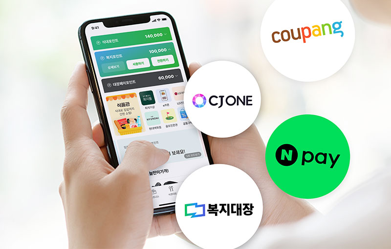

사용 기록부터 정산까지
흩어진 사용 내역을
관리자 화면 한곳에서.
식사 결제와 함께 사용 내역이 기록됩니다. 부서별·식당별 통계를 확인하고, 제휴점 이용 내역을 통합 정산하는 방식으로 운영해 보세요.
- 사용 내역 확인
- 부서·식당별 통계
- 통합 정산
 도입 상담 ↗
도입 상담 ↗현대벤디스 기업복지 솔루션
직원에게는 더 좋은 일상을.
담당자에게는 더 쉬운 운영을.
식사부터 복지포인트, 선물, 오피스 운영까지.
우리 회사에 필요한 복지를 한곳에서 시작하세요.

* 인증 범위: 기업 복지 서비스 플랫폼(식권대장) · 유효기간 2026.03.18–2029.03.17
담당자의 고민부터
지금 겪고 있는 상황을 골라보세요.
바꿀 수 있는 업무와 도입 전에 확인할 조건을 함께 짚어드립니다.
사용 기록부터 정산까지
식사 결제와 함께 사용 내역이 기록됩니다. 부서별·식당별 통계를 확인하고, 제휴점 이용 내역을 통합 정산하는 방식으로 운영해 보세요.
회사 정책에 맞는 지급
시간·요일·지급 기준을 설정하고 즉시 지급과 예약 지급을 활용할 수 있습니다. 외주업체 직원이나 출장 인원은 별도 그룹으로 구분해 운영하는 방식을 살펴보세요.
직원에게 맞는 식사 선택
주변 제휴점 이용, 사무실 배달식사, 배송 식품 등 식사 방식을 살펴보세요. 직원이 실제로 이용할 장소와 시간에 맞춰 선택지를 검토할 수 있습니다.
근무 환경에 맞는 구성
외부식사부터 배달식사, 재택 배송식품과 단체급식까지. 근무 장소별로 필요한 방식을 나누고, 각 위치에서 이용 가능한 구성을 확인하세요.
우리 회사 조건으로 검토하고 싶다면예산·인원·근무 환경을 바탕으로 상담을 준비하세요.
식대 운영 상담하기직원의 하루
가끔 받는 혜택을 넘어, 매일 느끼는 변화.
직원의 하루를 따라가 보세요.



사무실에 맞는 커피머신과 원두. 준비와 관리 부담은 줄이고, 직원에게는 매일의 여유를 선물합니다.
커피대장 살펴보기 ↗제휴점 찾기부터 모바일 결제까지. 직원은 편하게 식사하고, 회사는 정책에 맞춰 식대를 운영합니다.
식권대장 살펴보기 ↗쿠팡캐시·네이버페이·씨제이원 포인트와 복지대장몰. 직원이 자신의 취향과 생활에 맞게 선택합니다.
복지대장 살펴보기 ↗예산과 인원, 일정에 맞춘 임직원 선물. 전담 플래너와 함께 준비하고 고마운 마음을 전합니다.
단체선물대장 살펴보기 ↗회사 정책에 맞게시간·요일·지급 기준 설정
내역은 자동으로결제 내역 기록과 사용 통계
정산은 한곳에서여러 제휴점도 통합 정산
우리 회사에 맞는 서비스
회사의 규모도, 직원의 취향도 다르니까.
지금 필요한 서비스부터 시작하면 됩니다.
직원은 원하는 메뉴를 자유롭게, 담당자는 식대 지급부터 정산까지 간편하게.
조식 · 중식개방형과 폐쇄형 복지몰을 함께.
쿠팡캐시 · 네이버페이인원·예산·일정만 알려주세요.
명절 · 창립기념일커피머신 렌탈부터 원두 주문과 관리까지.
머신 렌탈 · 원두 구독한 건의 주문도 사무실로 무료 배달.
무료 배달 · 개별 주문음료·스낵·간편식을 사무실 가까이.
음료 · 스낵든든한 식사부터 커피와 간식까지.
기업 행사 · 임직원 응원식권대장 앱 사용자를 위한 폐쇄형 복지몰.
앱 내 복지몰 · 개인결제카카오 T 퀵과 함께하는 기업 배송.
카카오 T 퀵 · 예약 배송회사에 필요한 법정의무교육과 산업안전보건교육.
온라인 수강 · 컴퓨터·모바일기업문자·카카오 비즈톡·RCS와 타겟마케팅까지.
기업문자 · 카카오 비즈톡출력량과 업무 환경에 맞는 사무기기 렌탈.
복합기 렌탈 · 리코고객사가 경험한 변화
실제 고객사가 전한 경험을 살펴보세요.
임직원뿐 아니라 외부 업체 직원과 손님에게도 즉시 식권을 발행할 수 있어 유용하다는 도입 사례입니다.
복지대장을 활용한 복리후생 정책이 알려지며 신규 인재 채용에 도움이 되었다고 소개한 사례입니다.
출처: 식권대장·복지대장 공식 고객사례. 기업별 이용 환경과 효과는 다를 수 있습니다.
현대벤디스 소식